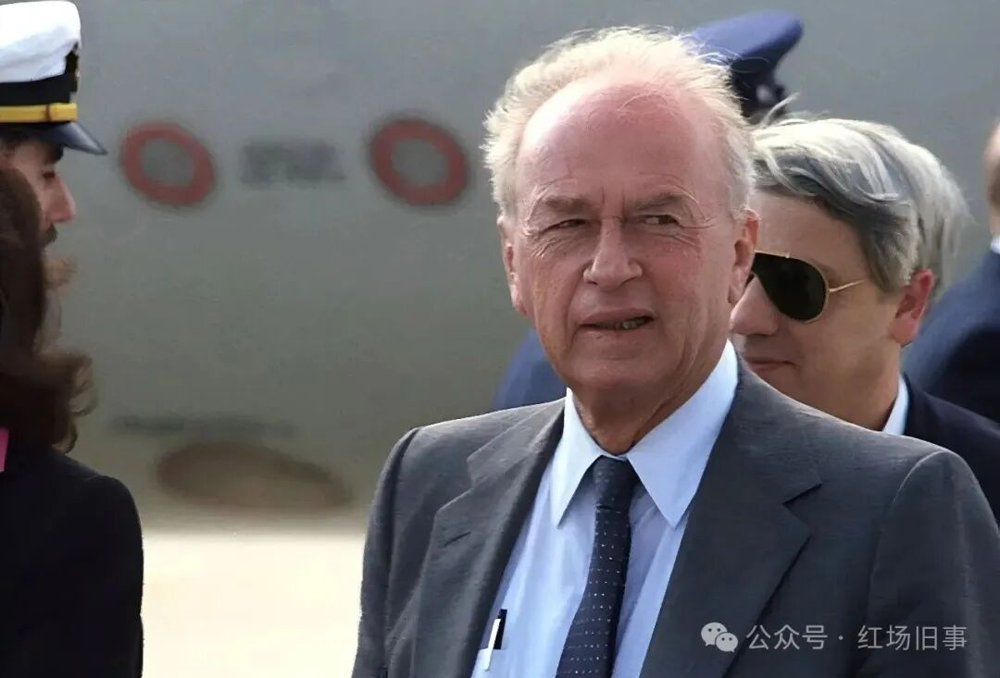
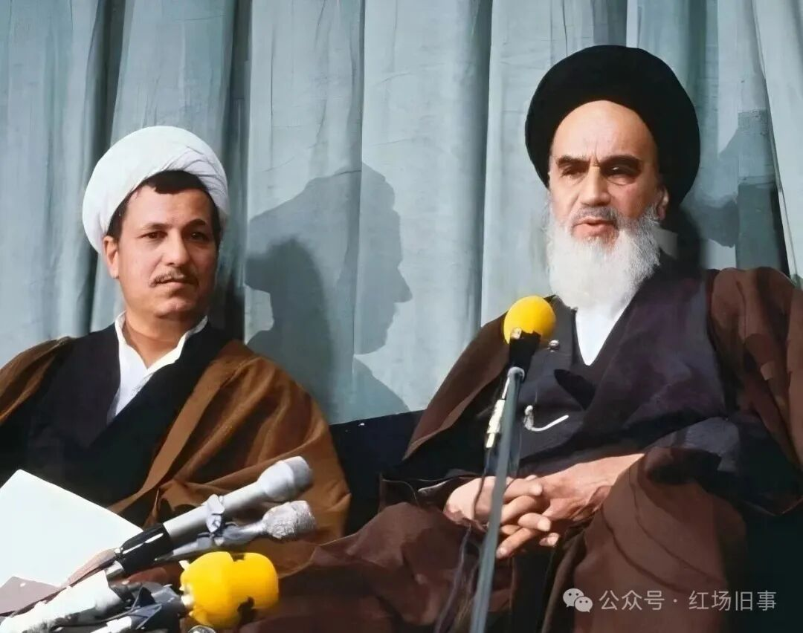

1980年9月22日凌晨，伊拉克的米格战机群越过边境，对伊朗15座城市发动突袭。两伊战争开始了。而在德黑兰，一个荒诞的剧本正在上演。几个月前，霍梅尼还在高喊“以色列是伊斯兰的敌人”“耶路撒冷的非法占领者”，把犹太复国主义者称为“小撒旦”。但很快，这位宗教领袖就会收到来自特拉维夫的第一批“礼物”。这就是地缘政治的残酷真相——在生存面前，意识形态不过是可以随时折叠的纸牌。
一、孤立中的绝望抉择
战争的第一个月，伊朗就陷入绝境。巴列维时期买的那些美制战机，F-14雄猫、F-4鬼怪，因为缺零件趴在停机坪上飞不起来。革命后美国断供，伊朗空军能起飞的战机不到20%。前线战况惨烈，伊拉克军队在1980年末占领了伊朗约2万平方公里领土，包围石油重镇阿巴丹，攻陷霍拉姆沙赫尔。霍梅尼面临一个致命困境：没有武器，革命就会夭折。但谁能卖给他武器呢？苏联不可能，莫斯科跟巴格达关系密切，正全力支持萨达姆。欧洲国家受美国压力，没人敢违反禁运。阿拉伯世界站在伊拉克一边。就剩下一个选项了：以色列。
二、敌人的敌人是朋友
特拉维夫的决策层在1980年10月达成了一个让世界震惊的共识——不能让伊拉克获胜。这个判断背后是冷冰冰的地缘政治算计：伊拉克距离以色列就几百公里，其远程导弹能直接威胁以色列心脏地带；萨达姆的军队装备了米格-25、飞毛腿导弹这些苏制先进武器，一旦获胜，就会变成苏联在中东的前锋；而革命后的伊朗军队经过清洗、混乱，就算打赢了，短期内也动不了以色列。前以色列总理伊扎克·拉宾后来有句名言：“伊朗是我们最好的朋友。”

这句话在公开场合听着像天方夜谭，但私下开会时，以色列领导层的逻辑很清楚：支持伊朗，就是让两个潜在敌人互相消耗。
三、黑暗中的军火交易
1981年，第一批军火秘密运出了。从1981年到1983年，以色列向伊朗卖了大概1500枚导弹，包括陶式反坦克导弹、鹰式防空导弹，还有F-4、F-14战机的零部件。交易总额估计达5亿美元，大部分用伊朗石油支付。1981年7月，一架阿根廷运输机从特拉维夫飞往德黑兰的路上坠毁，调查人员发现了机上的秘密军火。这次事故第一次把以色列－伊朗秘密合作曝光了。但交易没停下来。伊朗空军能撑住，很大程度上靠这些来自“小撒旦”的补给。根据解密档案，德黑兰北部曾经驻守过至少百十名以色列顾问和技术人员。
四、里根政府的入局券
1985年，这场秘密交易来了个更荒诞的转折。黎巴嫩真主党绑架了好几个美国人质，里根政府急着找人质。但美国没法直接跟伊朗谈啊，那不就违反了“不跟恐怖分子谈判”的原则吗。于是，一个大胆的计划出来了：以武器换人质。以色列又当中间人。1985年8月，美国同意通过以色列向伊朗卖96枚陶式反坦克导弹。9月，第二批408枚导弹运到伊朗，第二天一个美国人质获释。事情远不止“武器换人质”这么简单。美国国家安全委员会的奥利弗·诺思中校想了个更离谱的主意：把卖武器给伊朗赚的钱，秘密转到尼加拉瓜反政府武装“康特拉”的瑞士银行账户。这直接违反了国会通过的《博兰修正案》，该法案禁止政府资助尼加拉瓜反政府军。一个交易变成了三重丑闻：违反对伊朗武器禁运；跟恐怖主义支持者做交易；瞒着国会资助海外武装。1986年11月，黎巴嫩一家小杂志《船桅》周刊发了一条消息，把整个华盛顿都炸了。报道说，前美国国家安全顾问麦克法兰在1986年5月偷偷去过德黑兰，跟伊朗高层见了面。他带着里根的亲笔信、一本签名的圣经、一块象征美伊关系的钥匙形蛋糕，还有几把象征美国可以提供武器的科特式手枪。伊朗议长拉夫桑贾尼马上证实了这个消息，说麦克法兰他们被软禁在旅馆5天后赶走了。
五、丑闻爆发后的真相
丑闻全面爆发。美国司法部调查发现，卖武器所得的大概1800万到3000万美元被挪给尼加拉瓜反政府军了。里根政府陷入执政以来最严重的信任危机，支持率从67%跌到46%。1987年3月，里根不得不在全国电视上承认："这项以伊朗为战略敞口的行动，在执行中变成了武器换人质的交易。"最讽刺的是，伊朗在这场交易里赚翻了，既拿到了急需的武器，又放了人质，还拿到了美国人的钱。文章开头那个问题有了答案：霍梅尼为啥能一边公开骂以色列，一边私下收以色列的武器？答案就是现实主义的双轨政治。霍梅尼的政府内部也不是铁板一块。以议长拉夫桑贾尼为代表的务实保守派认为，为了革命生存和战争胜利，可以暂时放下意识形态。最高领袖霍梅尼本人，虽然反对殖民主义和霸权主义，但也懂“以退为进”的政治艺术。

公开层面上，伊朗继续喊“消灭以色列”、“耶路撒冷是我们的”，维持反以立场的纯洁性。私下里呢，德黑兰通过以色列拿武器和情报，维持对伊拉克的战争能力。
六、双轨策略的代价
这种双轨策略给后来的关系埋了伏笔。当两伊战争在1988年结束后，共同敌人没了，维系合作的纽带断了，敌意立马回弹。伊朗开始支持黎巴嫩真主党这些反以武装，以色列就通过情报战、网络战回击。伊朗的核计划成了以色列最大的安全焦虑，双方对抗从代理人战争升级成直接威胁。1988年8月20日，两伊战争正式停火。八年战争，100万人死了，经济损失超过8000亿美元。边境线回到1980年的样子，没有赢家，没有领土变更，所有争端都还在。那场秘密军售呢？以色列成功削弱了伊拉克，但养了个更危险的对手。伊朗保住了政权，但背上了沉重的意识形态包袱，到现在都走不出跟以色列的死结。美国陷入“伊朗门”丑闻，里根政府声望扫地，十多个官员被起诉。所有人都输了。霍梅尼在战争结束后被迫接受停火，说这就像“喝下一杯毒药”。但这杯毒药的配方，早在1981年第一批以色列导弹运到德黑兰时，就注定了。
下期预告
伊朗切断与以色列一切外交联系，关闭以色列驻德黑兰大使馆，将其移交给巴勒斯坦解放组织（巴解组织）——成为全球唯一将外国使馆交给巴解的国家。从“天然盟友”到“必须消灭的敌人”，意识形态何以在几个月内彻底颠覆一切现实利益？以色列情报机构摩萨德为何对这场巨变毫无准备？打不起 怂不住：坐拥世界级资源的伊朗，为何活成了“中东穷人”？哈梅内伊、苏莱曼尼、内贾德：一个时代的终结
文字与图片版权归各自权利人所有；排版根据抓取内容整理。